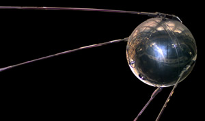

PyHdust: BeACoN tools for HDUST
Documentation of my Python tools for the BeACoN group, mainly for HDUST, including spectroscopy, polarimetry and interferometry ones.

Scientific publications
Published papers, arXiv, thesis and related stuff.

Notes and links
Some notes and links, including Python, Astronomy and computational resources.